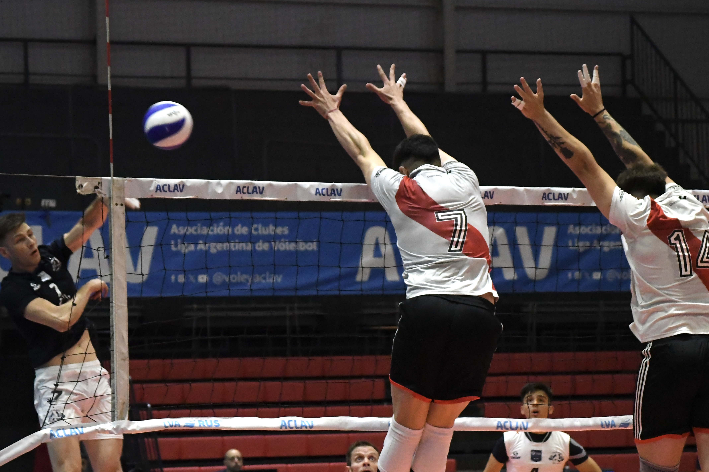

Su función es que el atacante ataque cómodo, bien y frente a la menor cantidad posible de bloqueos. suele realizar el segundo toque de los tres disponibles. El buen armado es el que optimiza la potencialidad del atacante, debe estar al servicio de los compañeros, actuando como un mozo.
El punta receptor es el jugador que lleva la responsabilidad de recibir el saque junto con el libero. Suele ser el que remata las pelotas que el armador coloca del lado izquierdo de la cancha. Los puntas receptores junto con los opuestos suelen ser a menudo los jugadores que mas obtienen puntos en el juego.

el central es el bloqueador del centro. Por lo tanto, una de sus principales implicaciones en el juego será la de bloquear. Al ser el jugador del centro, el peso del bloqueo recae en él, ya que es él mismo, el que dirige esta acción. Dentro del juego, estará ayudando a los extremos a la hora de bloquear.
El líbero es un jugador defensivo que puede entrar y salir continuamente del campo sustituyendo a cualquiera de los otros jugadores cuando por rotación se encuentran en posición defensiva. Es fácilmente reconocible porque viste diferente del resto del equipo.
El rematador opuesto juega en el poste de la red en el lado derecho de la cancha. Esto significa que se enfrentan al rematador externo del equipo contrario. Se caracterizan por ser principalmente buenos bloqueadores y atacantes.